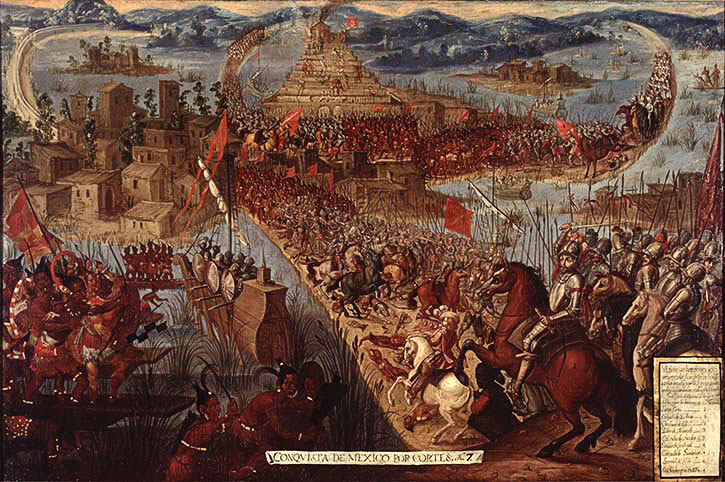
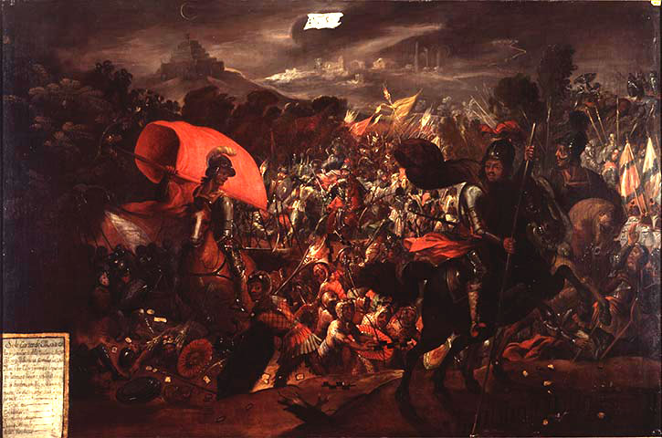

This question may seem easy to answer on the surface but is much harder to answer when going into the facts. Gold and silver were Cortés’ main objectives, but he also wanted to convert the natives to Christianity to save them as so many colonizers did. Most importantly, he wanted glory. The conquest of the Aztecs by Cortés and his conquistadors seems justifiable, but the facts show the disgusting truth of his conquest.
“Cortés then began his march of death from town to town, using deception turning Aztec against Aztec, killing with the kind of deliberateness that accompanies a strategy to paralyze the will of the population by a sudden frightful deed. And so, in Cholulu, he invited the headmen of the Cholula nation to the square. And when they came, with thousands of unarmed retainers, Cortés’s small army of Spaniards, posted around the square with cannon, armed with crossbows, mounted on horses, massacred them, down to the last man. Then they looted the city and moved on”
This was no conquest, this was a mass murder of innocent people. Fighting for land and its natural resources is perfectly justifiable, but when it comes to the murder of millions of innocent natives and attempting to rewrite history to make your murders seem justifiable as an act of self-defense, something has to be said. The natives already thought Cortés was a god, so there was no need to kill them all. They would’ve submitted to Spain almost immediately requiring almost no bloodshed if any at all, but Cortés wanted glory. He wanted that story of “I singlehandedly defeated one of the most powerful empires in the world after they attacked us first”, heavy emphasis on that last part. Cortés’ viewpoint of “Hey! They have gold and silver. I want gold and silver. I’ll kill them to take their land” is understandable, but not justifiable. There are so many better ways he could’ve taken over the Aztecs, but he got too greedy and he was filled with the need for glory.